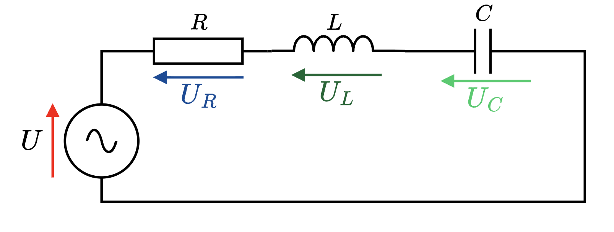
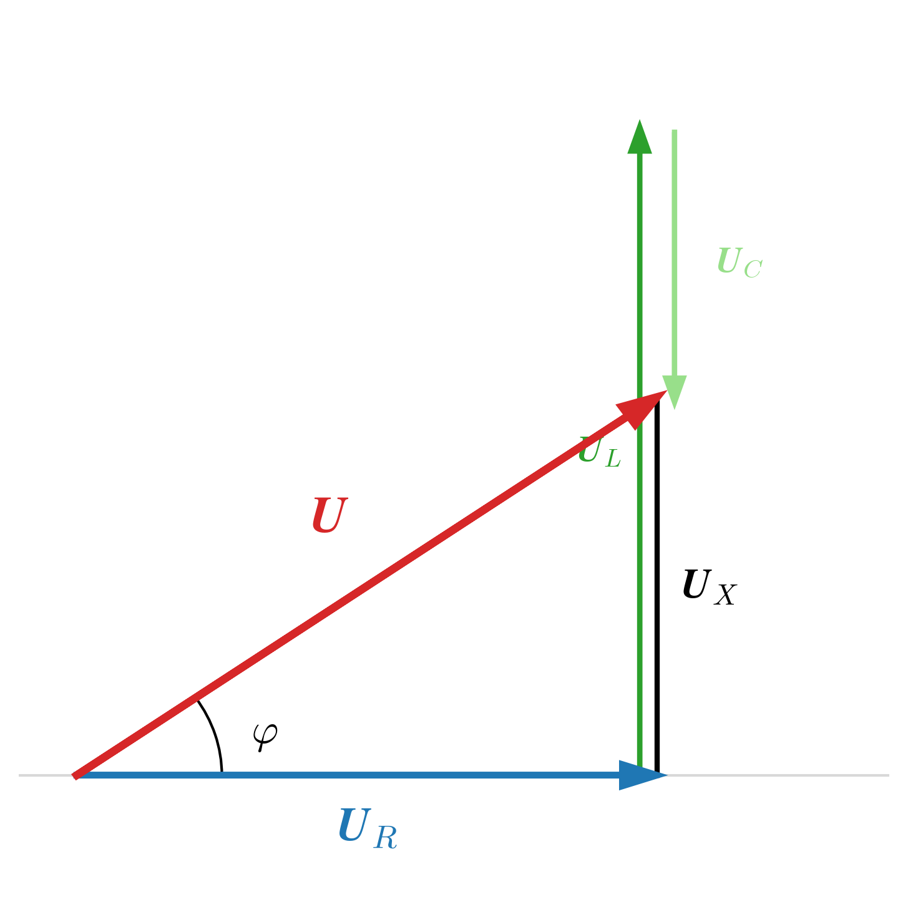
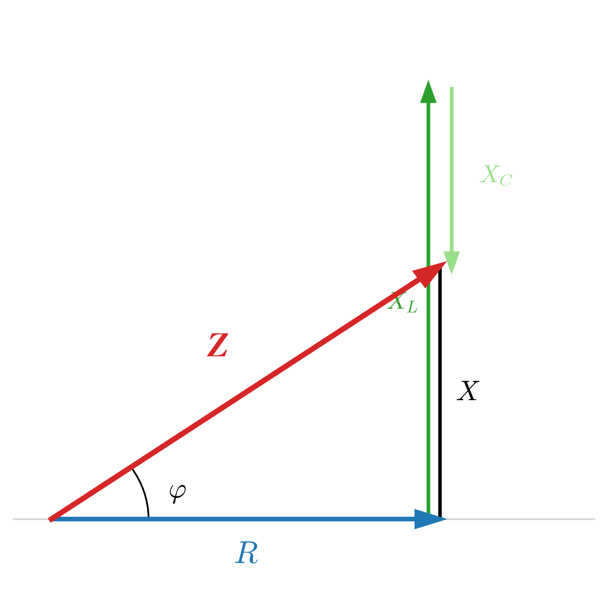
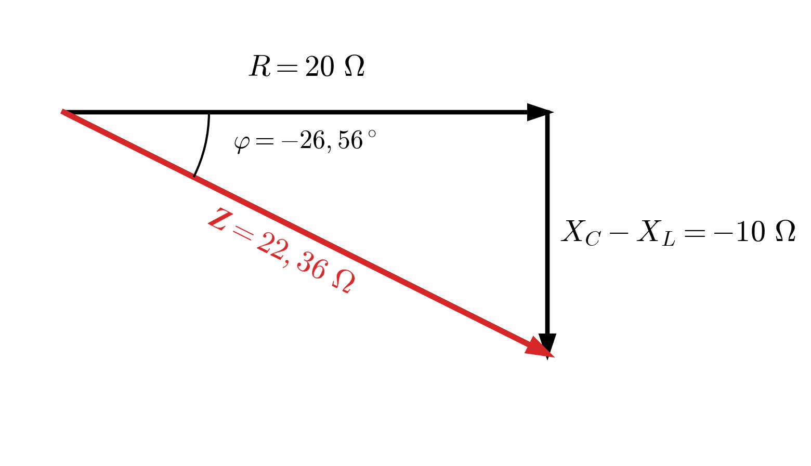
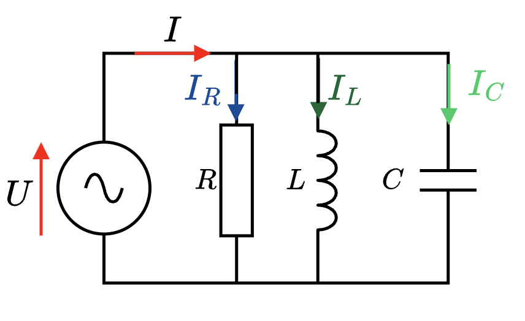
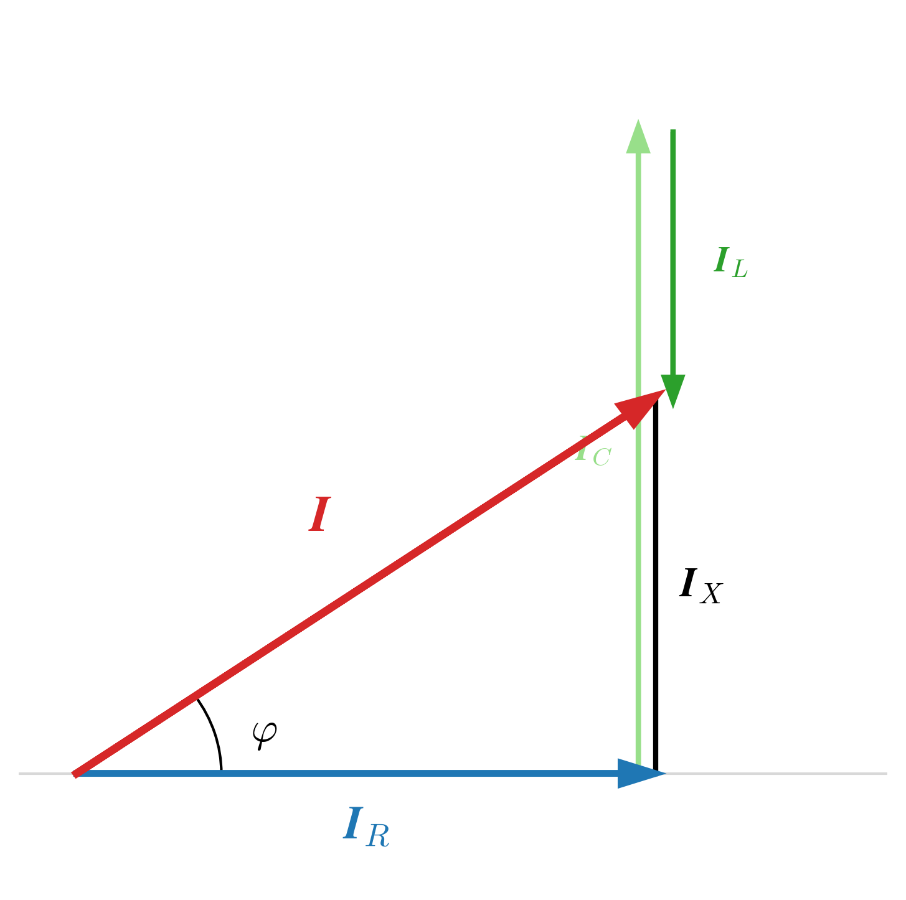
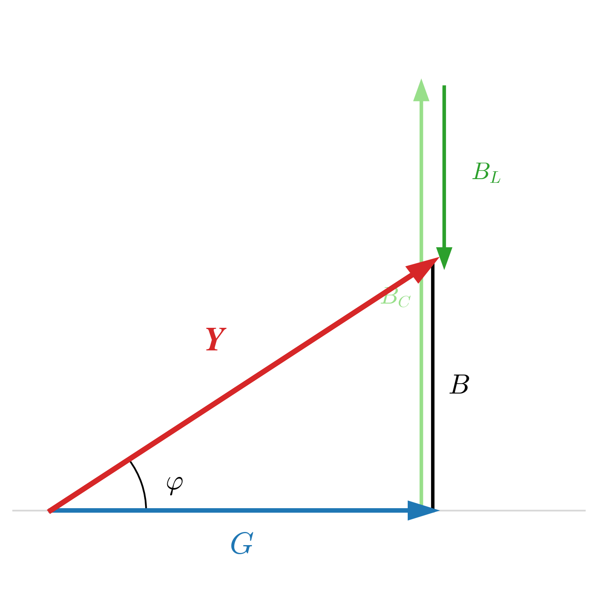
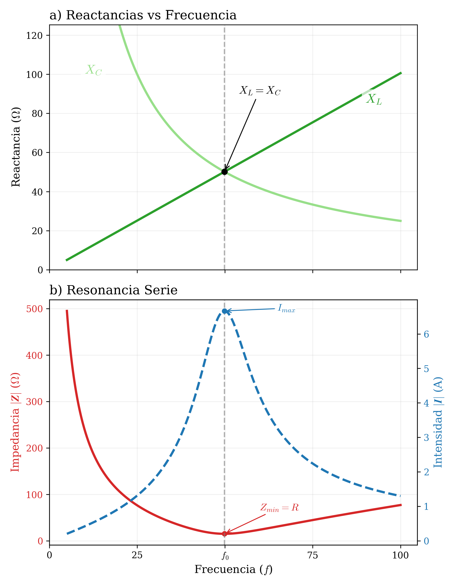

5.1 Circuito RLC serie
Uno de los circuitos típicos en corriente alterna es el circuito RLC serie que se muestra en la siguiente figura:


Tomando como referencia de ángulos la intensidad \((\varphi_I=0^\circ, \vec{I}=I\angle 0^\circ)\) la tensión en cada elemento es:
\[ \begin{aligned} \vec{U}_R &= R \cdot \vec{I} \\ \vec{U}_L &= \mathrm{j} \cdot X_L \cdot \vec{I} \\ \vec{U}_C &= -\mathrm{j} \cdot X_C \cdot \vec{I} \end{aligned} \]
La tensión total \(\vec{U}\) es la suma vectorial de las tensiones parciales; así tenemos:
\[ \begin{aligned} \vec{U} &= \vec{U}_R + \vec{U}_L + \vec{U}_C = \\ &= R \cdot \vec{I} + \mathrm{j} \cdot X_L \cdot \vec{I} - \mathrm{j} \cdot X_C \cdot \vec{I} = \\ &= [R + \mathrm{j} \cdot (X_L - X_C)] \cdot \vec{I} \end{aligned} \]
La expresión anterior se puede poner como:
\[ \vec{U} = (R + \mathrm{j} \cdot X) \cdot \vec{I} = \vec{Z} \cdot \vec{I} \]
La impedancia del circuito es:
\[ \vec{Z} = R + \mathrm{j} \cdot (X_L - X_C) = R + \mathrm{j} \cdot \left( \omega \cdot L - \frac{1}{\omega \cdot C} \right) \]
Expresado en coordenadas polares resulta:
\[ \vec{Z} = |\vec{Z}| \angle \varphi = \left\{ \begin{aligned} |\vec{Z}| &= \sqrt{R^2 + X^2} = \sqrt{R^2 + (X_L - X_C)^2} = \sqrt{R^2 + \left( \omega \cdot L - \frac{1}{\omega \cdot C} \right)^2} \\[2ex] \varphi &= \arctan\left( \frac{X}{R} \right) = \arctan\left( \frac{X_L - X_C}{R} \right) = \arctan\left( \frac{\omega \cdot L - \frac{1}{\omega \cdot C}}{R} \right) \end{aligned} \right. \]

Enunciado: En un circuito RLC serie con \(R=20\ \Omega\), \(L=100/\pi\ \text{mH}\) y \(C=1/2\pi\ \text{mF}\), funcionando a una frecuencia de \(50\ \text{Hz}\), calcula:
a) La impedancia total (módulo y argumento).
b) La intensidad que circula si la tensión es de \(230\ \text{V}\).
c) Diagrama fasorial.
Solución:
1. Cálculo de Reactancias: Primero obtenemos los valores óhmicos de la bobina y el condensador a \(f=50\text{Hz}\).
\[ \begin{aligned} X_L &= \omega \cdot L = 2\pi \cdot 50 \cdot \frac{100}{\pi} \cdot 10^{-3} = 10\ \Omega \\ X_C &= \frac{1}{\omega \cdot C} = \frac{1}{2\pi \cdot 50 \cdot \frac{1}{2\pi} \cdot 10^{-3}} = \frac{1}{50 \cdot 10^{-3}} = 20\ \Omega \end{aligned} \]
2. Cálculo de la Impedancia (\(\vec{Z}\)): Como \(X_C > X_L\), el circuito será capacitivo. Restamos las reactancias (\(X = X_L - X_C = 10 - 20 = -10\ \Omega\)).
Forma Binómica: \[\vec{Z} = R + \mathrm{j}(X_L - X_C) = 20 - \mathrm{j}10\ \Omega\]
Forma Polar: Pasamos a polar calculando módulo y argumento: \[|\vec{Z}| = \sqrt{20^2 + (-10)^2} = 22,36\ \Omega\] \[\varphi = \arctan\left(\frac{-10}{20}\right) = -26,56^\circ\]
Resultado Impedancia: \[\vec{Z} = 22,36 \phase{-26,56^\circ}\ \Omega\]
Como \(\varphi < 0\), confirmamos que la tensión está retrasada respecto a la intensidad (comportamiento capacitivo).

3. Cálculo de la Intensidad (\(\vec{I}\)): Aplicamos la Ley de Ohm generalizada. Tomamos la tensión como referencia de fase (\(0^\circ\)):
\[ \vec{I} = \frac{\vec{U}}{\vec{Z}} = \frac{230 \phase{0^\circ}}{22,36 \phase{-26,56^\circ}} = 10,29 \phase{0^\circ - (-26,56^\circ)}\ \text{A} \]
\[\boxed{\vec{I} = 10,29 \phase{26,56^\circ}\ \text{A}}\]
4. Diagrama Fasorial U-I (Apartado c): Representamos los fasores resultantes.
- Tensión (\(\vec{U}\)): En el eje real (\(0^\circ\)).
- Intensidad (\(\vec{I}\)): Girada \(+26,56^\circ\).
Como se observa en el diagrama, el fasor de intensidad \(\vec{I}\) (azul) está adelantado respecto al fasor de tensión \(\vec{U}\) (rojo) un ángulo \(\varphi = 26,56^\circ\).
Esto confirma el comportamiento capacitivo global del circuito.

5.2 Circuito RLC Paralelo
De forma análoga al circuito serie, el circuito RLC paralelo es el estándar para analizar componentes conectados a la misma tensión.


Tomando como referencia de ángulos la tensión común \((\varphi_U=0^\circ, \vec{U}=U\angle 0^\circ)\) la corriente en cada rama es:
\[ \begin{aligned} \vec{I}_R &= \frac{\vec{U}}{R} = G \cdot \vec{U} \\ \vec{I}_C &= \frac{\vec{U}}{-\mathrm{j}X_C} = \mathrm{j} \cdot \frac{1}{X_C} \cdot \vec{U} \\ \vec{I}_L &= \frac{\vec{U}}{\mathrm{j}X_L} = -\mathrm{j} \cdot \frac{1}{X_L} \cdot \vec{U} \end{aligned} \]
La corriente total \(\vec{I}\) es la suma vectorial de las corrientes de rama (Ley de Kirchhoff de los nodos); así tenemos:
\[ \begin{aligned} \vec{I} &= \vec{I}_R + \vec{I}_C + \vec{I}_L= \\ &= \frac{1}{R} \cdot \vec{U} + \mathrm{j} \frac{1}{X_C} \cdot \vec{U} - \mathrm{j} \frac{1}{X_L} \cdot \vec{U}= \\ &= \left[ \frac{1}{R} + \mathrm{j} \cdot \left(\frac{1}{X_C} - \frac{1}{X_L}\right) \right] \cdot \vec{U} \end{aligned} \]
La expresión anterior se puede poner como la Ley de Ohm generalizada \(\vec{I} = \vec{Y} \cdot \vec{U}\), donde el término entre corchetes es la Admitancia (\(\vec{Y}\)).
\[ \vec{I} = (G + \mathrm{j} \cdot B) \cdot \vec{U} = \vec{Y} \cdot \vec{U} \]
La admitancia del circuito (inversa de la impedancia, \(\vec{Y} = 1/\vec{Z}\)) es:
\[ \vec{Y} = \frac{1}{R} + \mathrm{j} \cdot \left( \omega \cdot C - \frac{1}{\omega \cdot L} \right) \]
En forma polar sería:
\[ \vec{Y} = |\vec{Y}| \angle \varphi = \left\{ \begin{aligned} |\vec{Y}| &= \sqrt{G^2 + B^2} = \sqrt{\left(\frac{1}{R}\right)^2 + (B_C - B_L)^2} = \sqrt{\left(\frac{1}{R}\right)^2 + \left( \omega \cdot C - \frac{1}{\omega \cdot L} \right)^2} \\[2ex] \varphi &= \arctan\left( \frac{B}{G} \right) = \arctan\left( \frac{B_C - B_L}{G} \right) = \arctan\left( \frac{\omega \cdot C - \frac{1}{\omega \cdot L}}{1/R} \right) \end{aligned} \right. \]

5.3 Frecuencia de Resonancia
En los circuitos RLC, existe una frecuencia específica muy especial en la que los efectos de la bobina y el condensador se anulan mutuamente. Este fenómeno se conoce como Resonancia.
5.3.1 Condición de Resonancia
La resonancia ocurre cuando la Reactancia Inductiva iguala en magnitud a la Reactancia Capacitiva.
\[ X_L = X_C \]
A partir de esta igualdad, podemos deducir el valor de la frecuencia de resonancia (\(f_0\)):
\[ \begin{aligned} \omega_0 \cdot L &= \frac{1}{\omega_0 \cdot C} \\[1ex] \omega_0^2 &= \frac{1}{L \cdot C} \\[1ex] \omega_0 &= \frac{1}{\sqrt{L \cdot C}} \end{aligned} \]
Como \(\omega = 2 \pi f\), despejamos la frecuencia:
5.3.2 Comportamiento del Circuito
A esta frecuencia \(f_0\), el circuito se comporta como si fuera Puramente Resistivo, ya que las partes imaginarias se cancelan (\(\mathrm{j}X_L - \mathrm{j}X_C = 0\)).

Análisis Gráfico:
Bajas Frecuencias (\(f < f_0\)): El condensador domina (\(X_C\) es muy grande). El circuito es Capacitivo.
Punto de Resonancia (\(f = f_0\)): \(X_L\) y \(X_C\) se cruzan. La impedancia es puramente resistiva (\(\vec{Z}=R\)).
Altas Frecuencias (\(f > f_0\)): La bobina domina (\(X_L\) crece). El circuito se vuelve Inductivo.
5.3.3 Diferencias: Resonancia Serie vs Paralelo
Aunque la frecuencia \(f_0\) se calcula igual para ambos, las consecuencias físicas son opuestas:
| Característica | Resonancia SERIE | Resonancia PARALELO |
|---|---|---|
| Impedancia Total | Mínima (\(\vec{Z} = R\)) | Máxima (\(\vec{Z} \to \infty\) idealmente) |
| Intensidad de Fuente | Máxima | Mínima |
| Peligro / Efecto | Sobretensiones: En \(L\) y \(C\) puede haber voltajes mucho mayores que la fuente. |
Sobrecorrientes: Entre \(L\) y \(C\) circula una corriente interna muy alta (corriente oscilante). |